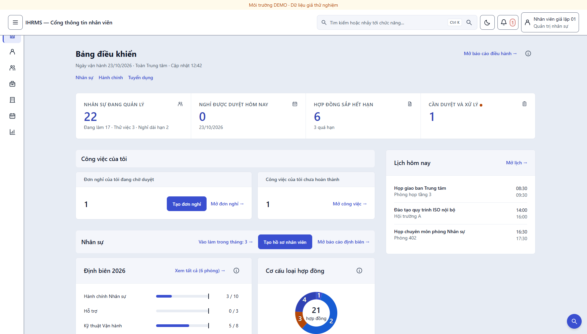
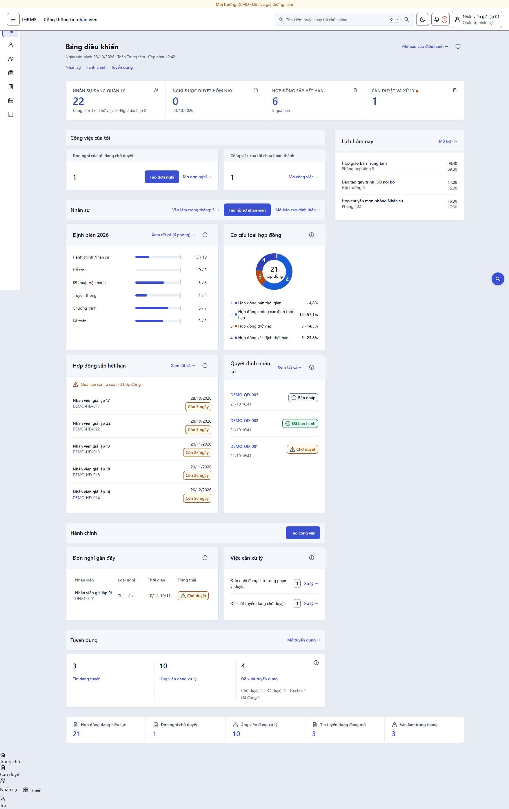
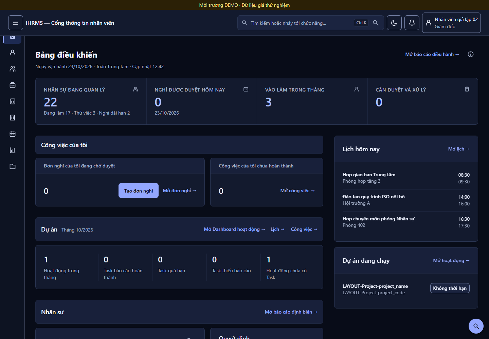
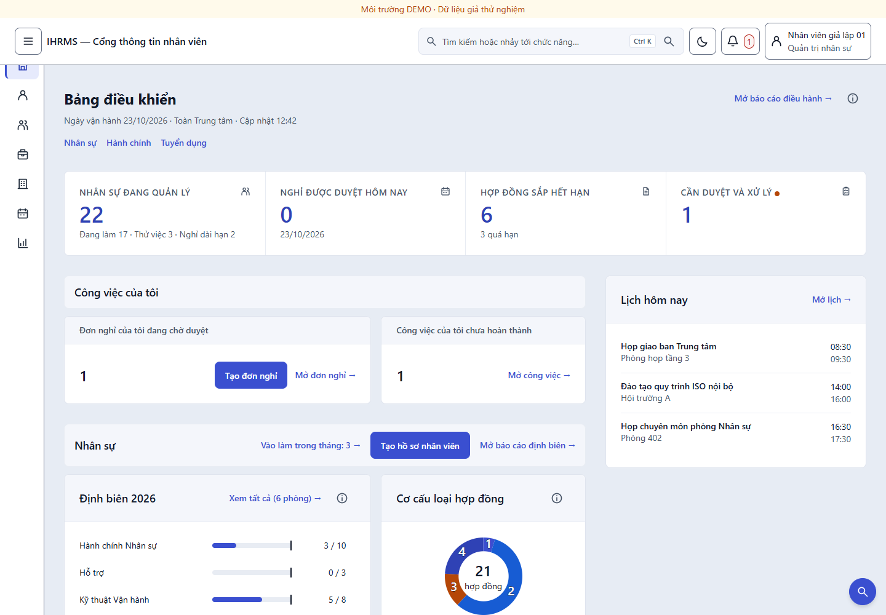
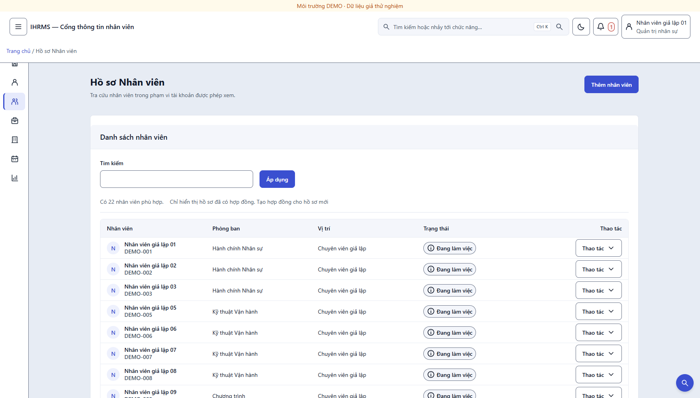
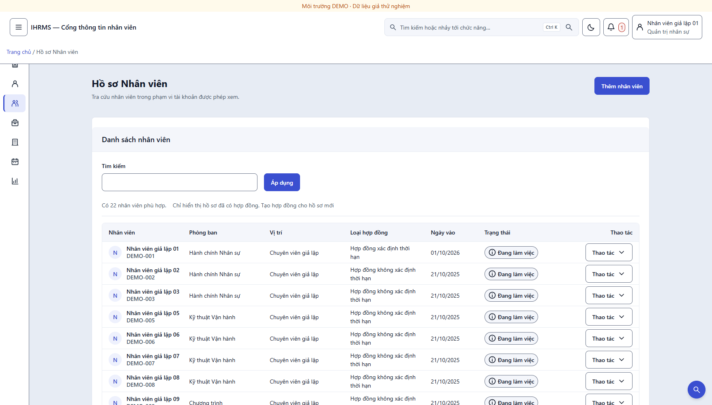
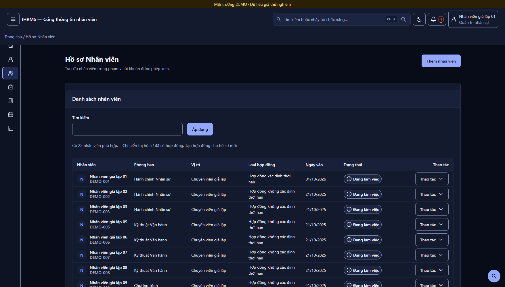

Bảng điều khiển đã thành 8/4, danh sách đủ cột hợp đồng, cổng đo xanh toàn bộ
Ba hạng mục còn lại của Phương án B (không cần duyệt thêm) đã vào mã. Điểm quan trọng nhất: run_dashboard_layout_uat.py từ 146 lỗi trên main xuống 0 lỗi — không phải bằng cách nới cổng, mà bằng cách sửa đúng ba chỗ cổng đang đo sai cấu trúc và hai chỗ lệch token.
8/4 lưới
Nội dung chính 8 cột, cột phải 4 cột dính khi cuộn. Dưới 1280px cột phải xuống dưới.
7 cột danh sách
Thêm “Loại hợp đồng” và “Ngày vào”. Hàng vẫn 53px, không có cuộn ngang ở 1756px.
0 lỗi cổng
4.572 checks / 48 ảnh. Trước đợt này: 146 lỗi trên main.
Bảng điều khiển — trước và sau



Cột phải theo vai trò
Cột phải không phải trang trí: mỗi khối chỉ mở khi tài khoản mở được trang đích, nên không tạo lối đi chết. “Lịch hôm nay” lọc theo đúng phạm vi của trang Sự kiện (sự kiện toàn Trung tâm + sự kiện phòng mình). “Dự án đang chạy” chỉ hiện với vai trò có view_activity_dashboard.


Danh sách nhân viên — thêm hai cột



font-variant-numeric) và không xuống dòng, nên so sánh theo chiều dọc được.Đã đổi những gì
| Hạng mục | Thay đổi | Tệp |
|---|---|---|
| Lưới 8/4 | .home-dashboard-body chia 8fr/4fr; .home-dashboard-stream giữ nhịp 32px; cột phải position:sticky. Không có cột phải thì lưới tự về một cột bằng :has(). Dưới 1280px cột phải xuống dưới và chia đôi. | home_dashboard.css, dashboard.html |
| Lịch hôm nay | Đọc Event bắt đầu trong ngày, lấy 5 dòng để biết còn bị cắt mà không tốn truy vấn đếm; phạm vi giống trang Sự kiện. Trạng thái rỗng vẫn hiện (“hôm nay không có sự kiện” là thông tin). | dashboard_data.py, _rail.html |
| Dự án đang chạy | Đọc Project đang hoạt động và hôm nay nằm trong khoảng thời gian dự án; chỉ mở khi có view_activity_dashboard. | dashboard_data.py, _rail.html |
| Dải số liệu đáy | Một thẻ 5 ô, ngăn bằng đường kẻ dọc, mỗi ô là link tới danh sách tương ứng. Không thêm truy vấn nào — chỉ gom số đã có trong snapshot, bỏ mục trùng nhãn với dải KPI, và tự ẩn khi còn dưới 2 ô. | home_presentation.py, _secondary_metrics.html |
| Cột Loại hợp đồng | View annotate loại hợp đồng mới nhất bằng một Subquery — một truy vấn cho cả trang, không N+1 theo dòng. | views/hr.py |
| Cột Ngày vào | Dùng join_date sẵn có; ô ngày thêm lớp .ui-table-date (không xuống dòng, chữ số đều cột). | hr_employee_list.html, shared_components.css |
| Nhịp nhóm 32px | .home-dashboard đổi gap từ 24px sang var(--ui-space-8) = 32px, đúng nhịp cổng đã chốt. | home_dashboard.css |
Còn lại của B
| Hạng mục | Trạng thái | Ghi chú |
|---|---|---|
| Rail 72px, command bar Ctrl+K, KPI một dải, mật độ 52–56px | Xong đợt 1 | — |
| Cột “Loại hợp đồng”, “Ngày vào” | Xong đợt 2 | Bảy cột, hàng 53px, không cuộn ngang ở 1756px |
| Lưới 8/4 + cột phải “Lịch hôm nay / Dự án đang chạy” | Xong đợt 2 | Khối nào cũng có trang đích và quyền tương ứng |
| Dải số liệu thứ hai ở đáy | Xong đợt 2 | Không thêm truy vấn; tự ẩn khi dưới 2 ô |
| Tab trạng thái thay một phần bộ lọc, toolbar dính | Cần bạn duyệt | Lệch quy chuẩn dải lọc 13/10 — tôi không tự đổi |
| Form hai cột + rail ngữ cảnh | Cần bạn duyệt | Ngoại lệ riêng, chưa có quyết định |
Hai mục cuối là quyết định của bạn, không phải việc kỹ thuật. Chúng đổi quy chuẩn đã ký ngày 13/10 (mọi trang danh sách dùng chung một dải lọc; biểu mẫu một cột). Tôi dừng ở đây thay vì tự đổi.
Cổng kiểm thử
| Cổng | Kết quả |
|---|---|
run_dashboard_layout_uat.py | 4.572 checks, 48 ảnh, 0 lỗi — 9 tài khoản × 1756/1440/1280/1024/768/390 × sáng/tối. Trước đợt này: 146 lỗi (groupGap, type cho mọi vai trò). |
run_layout_alignment_audit.py | 150 route, 6.881 ca, 0 vi phạm, 0 lỗi — 9 tài khoản × 1920/1756/1440/1280/1024/768/390 × sáng/tối. |
check_ui_contrast.py | 220 cặp, 0 lỗi — chữ nhỏ nhất 5,201:1 (sáng) / 5,712:1 (tối); UI nhỏ nhất 4,049:1 / 4,075:1. |
| Test đơn vị | 817 test toàn dự án OK (7 skip theo cấu hình), gồm 7 ca mới cho cột phải và dải đáy (test_dashboard_rail.py); riêng apps.portal là 306 test. |
Ba chỗ cổng đang đo sai, đã sửa cổng chứ không nới cổng
| Chỗ lệch | Vì sao đỏ | Đã làm |
|---|---|---|
groupGap | Cổng đòi nhịp nhóm 32px, CSS đặt 24px (--ui-space-5) — lệch có từ trước Phương án B. | Đổi CSS sang --ui-space-8 = 32px. Không sửa cổng. |
type | Cổng hard-code thang chữ (28px cho .home-work-value, 32px cho KPI) trong khi token là 24px và 36px. Số cứng cũ đã lỗi thời. | Cổng đọc thẳng token --ui-text-* rồi quy đổi rem→px. Cổng giờ kiểm “mọi cỡ chữ đến từ token”, không phải “khớp một con số cũ”. |
| Chọn phần tử | Cổng tìm .home-dashboard > section[id^=group-] (con trực tiếp). Có cột phải thì nội dung nằm trong .home-dashboard-stream. | Đổi sang chọn theo section[id] / con của stream — vẫn khẳng định đúng thứ tự nhóm và nhịp 12px bên trong, không bỏ qua kiểm nào. |
Một thay đổi ngân sách truy vấn, cần bạn biết: trần SELECT của trang chủ nâng 24 → 25 cho HR_MANAGER (và 26 → 27, riêng SUPERUSER 28) vì khối “Lịch hôm nay” là một truy vấn có giới hạn 5 dòng. Đã đo: trước 24/24 — tức là không còn dư một truy vấn nào; khối “Dự án đang chạy” chỉ chạy với vai trò có quyền nên HR không phát sinh thêm. Nếu bạn muốn giữ nguyên trần 24, tôi bỏ khối lịch và cột phải chỉ còn khối dự án.
Cần bạn quyết
- Trần truy vấn 24 → 25: chấp nhận (giữ “Lịch hôm nay”), hay giữ 24 và bỏ khối lịch?
- Tab trạng thái thay một phần bộ lọc + toolbar dính: duyệt hay không? Nếu duyệt, tôi làm ở đợt 3.
- Form hai cột + rail ngữ cảnh: duyệt hay không?
- Logo và icon PWA vẫn là mark xanh lá
#279048trên nền#EFF6FF— giữ, hay tôi dựng bản đơn sắc Chàm Đông? (Đây là tài sản thương hiệu nên tôi chưa tự đổi.)